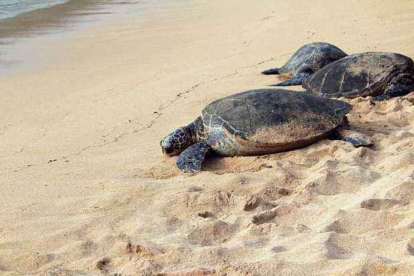
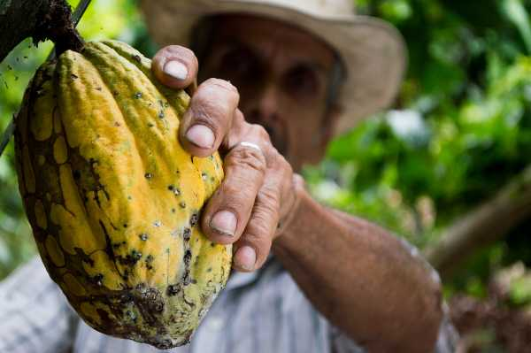

Playa San de Martin
A lovely beach on the east side of the island. Too far for many cruise ship passengers, this beach is worth the effort.
Ruins of San Gervasio
Historians believe that this temple was once devoted to Ixchel, the Mayan goddess of love and fertility. Abandoned in the 16th Century, most structures are still stading. Bring water and bug repellant and wear close toed shoes.

WWII Fighter Planes
There are a few WWII era planes on display near the airport. You might also get to see some planes landing.
Faro Celerain Eco Park or Punta Sur Ecological Park
This 2,500 acre park gives you a chance to see sea turtles and crocodiles in their natural habitat. There are also coral reefs to explore if you want to snorkle or dive. Those who want to stay dry, can enjoy the beach.
Cozumel Planitarium
The first 3D full-dome planetarium in Latin America. Free admission, but there is a fee to watch the films.
Mayan Cocao Company
If you like chocolate (and who dosen't?), don't miss out on the chance to tour the pre-European contact history of chocolate.
Jade Cavern (Chempital)
A stunning example of the famous natural limestone pools that form part of a vast underground river system, leave yourself half a day to explore the deep blue-green clear water and caves.
Museum of Cozumel
Housed in a former luxury hotel, the museum includes exhibits on the island's ecosystems and conservation issues, as well as ancient Mayan and Spanish artifacs. Located in Downtown San Miguel, the museum is fun and informative way to spend part of your day in Cozumel.
Sunday Evening at the Zocalo
Every Mexican town has a zocalo or central park. If you happen to be in Cozumel on a Sunday evening, stop by around 8pm for lots of free events.